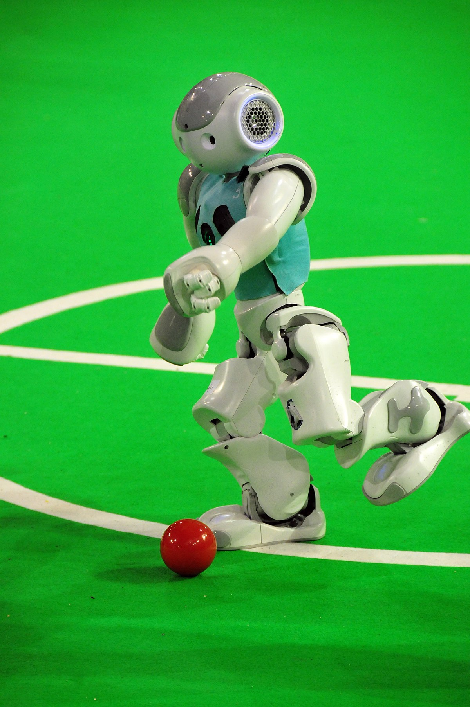

Embelias
Shubham Shukla
Interests vary really wide: From freelancing for beginner Java programs to applet desinging for websites to huge IoT operational projects, we give em our all. Web development to be added soon to the list. Programming languages I know: Java, Python, C, Arduino, Bash, Shell, JavaScript(basic).
Atul Kumar
I love to play my guitar (Shani) whenever I get some free time. Been tryin myself out on flute nowadays too. Drumset on the list all up!
Piyush Khanna
Spending time with books and poetries in his childhood, Piyush has gained keen interest in writing
and now, usually writes at night with munchies by his side.
That's not all, the band loves
poetry in Hindi, Urdu, Punjabi, Espanol, English, Braj and even Sanskritam.
Harsh Chillar
I love to play my guitar (Shani) whenever I get some free time. Been tryin myself out on flute nowadays too. Drumset on the list all up!
Govind Panwar
Spending time with books and poetries in his childhood, Piyush has gained keen interest in writing
and now, usually writes at night with munchies by his side.
That's not all, the band loves
poetry in Hindi, Urdu, Punjabi, Espanol, English, Braj and even Sanskritam.
Harsh Jain
I love to play my guitar (Shani) whenever I get some free time. Been tryin myself out on flute nowadays too. Drumset on the list all up!
And together,
we
'24 Robocup @ Home
About RoboCup '24
RoboCup is an annual international robotics competition founded in 1996 by a group of university professors (including Hiroaki Kitano, Manuela M. Veloso, and Minoru Asada). The aim of the competition is to promote robotics and AI research by offering a publicly appealing but formidable challenge.
|
 |
Our Novel Approaches

Single Camera Depth Aproximation
The robot uses a novel approach for distance approximation using computer vision. This is helpful in case where there is no other way of depth approximation by ultrasonic waves or Infrared waves sensor system.
This technique also enables the robot to tag the person to be followed as well as maintain a formal distance from him/her.

Speech Recognition
A novel approach for ’question cache-ing’ allows the robot to store the questions and their answers locally based on their frequency of being asked in normal conversations.
By utilizing NLP, Anushka can interpret and extract meaning from spoken or written text, enabling it to understand user commands, generate appropriate responses, and engage in natural language conversations.

Face Recognition
Novel approach for identifying and prioritizing humans in real-time has been applied to the face recognition system to mimic human behavior. The face recognition system uses deep learning Convolutional Neural Network for first creating face embeddings and storing them in local database.
This database is routinely checked for repeating faces and their mapped names. Priority is given to people based on their number of times meeting the robot and time since last meeting. On a routine-base dumping, faces are ”forgotten” if their priority is less, that is, the robot has met the person only once/twice and long time ago.